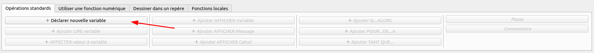

Une variable est un espace mémoire dans lequel on peut stocker une valeur.
Pour déclarer une variable, il faut préciser son type et son nom.
Le type d'une variable définit la nature de la valeur qu'elle peut contenir.
Le nom d'une variable est un identifiant qui permet de la désigner.
Dans un programme informatique, le développeur pourra nommer comme il le souhaite de nombreux éléments (variables, fonctions, propriétés, méthodes, librairies…).
Il est important de respecter certaines règles de nommage afin de rendre le code plus lisible et plus compréhensible.
Il est possible de choisir le type de nommage que l'on souhaite, mais il est important de conserver le même dans l'ensemble de son programme.
Certains langages de programmation recommandent parfois un type de nommage bien précis (PHP Naming Convetions).
Il existe de nombreux types de données et ils sont spécifiques au langage utilisé.
AlgoBox propose seulement 3 types de données :
Certains langages permettent à une variable de changer de type.
Dans ce cas, le type de la variable n'est pas spécifié lorsque celle-ci est déclarée et peut changer au cours de l'algorithme.
C'est le cas de JavaScript, PHP, Python, Ruby, etc.
L'affectation consiste à stocker une valeur dans une variable.
AlgoBox ne permet pas de déclarer et d'affecter une variable en une seule instruction (mais la plupart des langages le permettent).
Il faudra donc dans un premier temps déclarer la variable pour ensuite lui affecter une valeur.
Positionnez-vous sur l'instruction DEBUT_ALGORITHME puis cliquez sur les boutons suivants :
Reproduire le code ci-dessous dans AlgoBox puis l'exécuter :